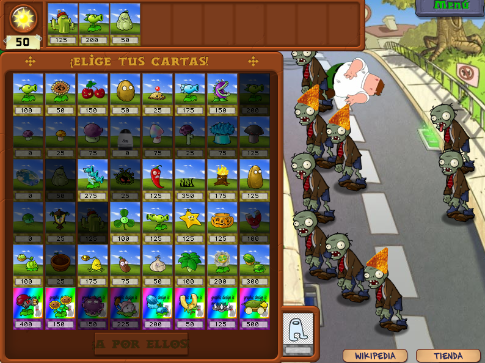

The cosmos in your garden
|
Well, I have to mention that I made these entries months after starting the project, so, although I started mentioning the changes in order, I will not try to keep an exact order, but I will comment on various changes around some aspect of the game, and then I will be able to move on to entries of the most recent changes. Today I will talk about the scenes that I have changed that would be equivalent to the day, night and pool. First, there would be the day level, which doesn't have much, I simply changed the color of the grass to a more bluish one. |
 |
|---|
|  |
|
Then there would be the night level that, for now, has been replaced by the Windows XP wallpaper. Apart from no suns falling because it is at night, in this scene there are also the tombstones, which emerge from the ground occupying squares and when a horde comes they generate zombies. For the desktop theme I decided to make the tombstones now .... |
 |
| ¡Shortcuts! |
|
After all, the tombstones give the zombies direct access to your yard, rather than entering from off-camera. I haven't
finished with the zombies in this scene but some will follow the theme.
Finally, there would be the pool, in which, in addition to now having 6 lines instead of 5, the central ones will be filled with water, so we will need water lilies to put plants in the water. I decided to change the water for the vastness of the cosmos. |
 |
 |
|
Although I also modified a couple of things on the lilypad, that will go to a plant-only post, just like all the changes to the zombies will go to another one. |
| Entry 1 |
|---|
| Entry 2 |
| Main section |
| Entry 4 |
| Entry 5 |